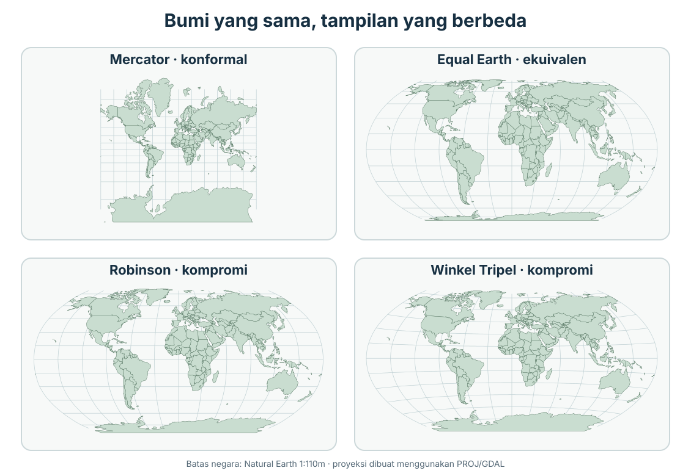
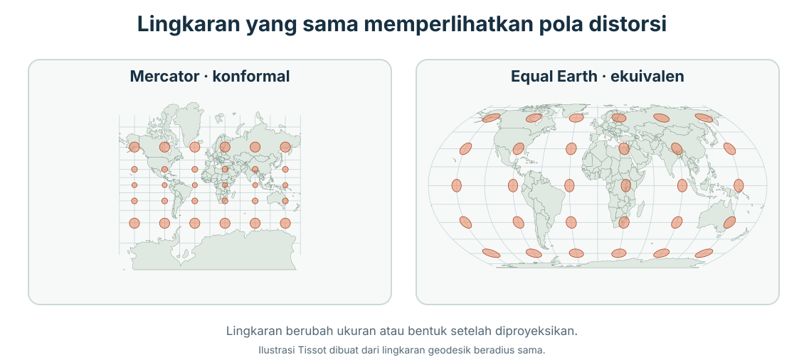
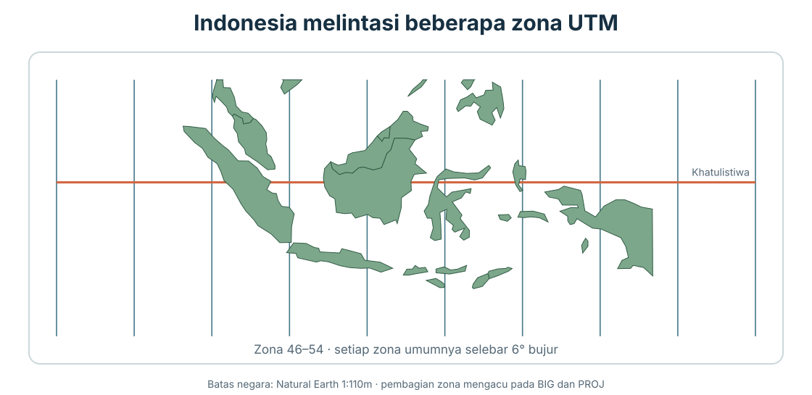

Pertemuan 5 · Daring · 100 menit
Pengantar proyeksi peta
Pertemuan ini menjelaskan cara menggambarkan permukaan bumi yang melengkung pada bidang datar.
- Mahasiswa mempelajari fungsi proyeksi peta dan perubahan (distorsi) yang selalu timbul dalam proses tersebut.
- Materi rinci, contoh kasus, dan tugas mandiri tersedia pada Materi 5.1: Sistem dan jenis proyeksi peta.
Pembukaan
1. Rencana pembelajaran
Kilas balikKomponen peta, skala, dan koordinat pada peta.
Dari globe ke petaMengapa permukaan lengkung tidak dapat diratakan tanpa perubahan?
Distorsi dan sifat proyeksiLuas, bentuk, jarak, dan arah; konform, sama luas, ekuidistan, azimutal.
Membaca contohPerbandingan peta dunia dan indikatriks Tissot.
Bidang dan aspek proyeksiSilinder, kerucut, bidang datar; normal, transversal, miring; singgung dan potong.
Elipsoid, datum, dan CRSHubungan model bumi, acuan posisi, dan sistem koordinat.
UTM di IndonesiaZona 46–54, belahan utara/selatan, dan contoh Yogyakarta.
Memilih proyeksi dan latihanMenentukan proyeksi berdasarkan tujuan peta.
Setelah pertemuan ini, mahasiswa mampu:
- menjelaskan mengapa proyeksi peta diperlukan;
- mengenali empat jenis distorsi, yaitu distorsi luas, bentuk/sudut, jarak, dan arah;
- membedakan sifat proyeksi, bidang proyeksi, dan aspek proyeksi;
- menjelaskan hubungan elipsoid, datum, dan sistem referensi koordinat;
- membaca zona UTM yang digunakan di Indonesia; serta
- memberikan alasan awal dalam memilih proyeksi untuk suatu peta.
Pertanyaan utama
2. Dari globe ke peta datar
Proyeksi peta (map projection) adalah metode matematis untuk mengubah posisi pada permukaan bumi yang melengkung menjadi posisi pada bidang datar.
- Permukaan globe tidak dapat diratakan tanpa robek, bergeser, atau meregang.
- Jika celah ditutup dengan meregangkan permukaan, luas, bentuk, jarak, atau arah berubah pada peta.
Proyeksi diperlukan karena beberapa alasan berikut.
- Peta harus dapat dicetak pada kertas dan ditampilkan pada layar yang datar.
- Globe sulit dibawa dan tidak dapat menampilkan wilayah kecil secara rinci, misalnya satu kecamatan pada skala besar.
- Pengukuran jarak dan luas di lapangan lebih mudah dilakukan dalam satuan meter pada bidang datar daripada dalam derajat pada permukaan lengkung.
Latihan awal
- Jika kulit jeruk dibuka dan diratakan, bagian mana yang harus robek, bergeser, atau meregang?
- Apa padanan bagian yang robek dan meregang tersebut pada peta dunia?
Konsep mengacu pada USGS, Map Projections dan National Geographic, Selecting a Map Projection.
Konsekuensi proyeksi
3. Empat jenis distorsi
Distorsi (distortion) adalah perbedaan antara ukuran atau bentuk suatu objek di permukaan bumi dan gambarnya pada peta.
Luas
Wilayah dapat tampak lebih besar atau lebih kecil daripada kenyataannya.
Bentuk / sudut
Sudut antara dua garis berubah sehingga bentuk wilayah tampak tertarik atau miring.
Jarak
Jarak yang sama di bumi dapat tergambar berbeda pada bagian peta yang berbeda.
Arah
Sudut arah terhadap utara dapat bergeser, kecuali dari titik atau garis tertentu.
Jenis distorsi mengacu pada USGS, Map Projections dan Esri, Work with Coordinate Systems.
Apa yang dipertahankan?
4. Sifat proyeksi
Setiap proyeksi dirancang untuk mempertahankan sifat tertentu dan mengorbankan sifat lainnya.
- Proyeksi kompromi (compromise) tidak mempertahankan satu sifat secara sempurna, tetapi menyeimbangkan beberapa distorsi agar peta dunia tampak wajar.
- Satu peta datar tidak mungkin sekaligus konform dan sama luas.
- Istilah azimutal juga dipakai untuk menyebut bidang proyeksi datar, sehingga artinya perlu dibaca dari konteks.
Periksa pemahaman
Jika tujuan peta adalah membandingkan luas hutan antarnegara, sifat apa yang lebih penting: konform atau sama luas?
Lihat pembahasan
- Sifat yang lebih penting adalah sama luas.
- Perbandingan luas harus dipertahankan agar dua negara yang luasnya sama di bumi juga tampak sama luas pada peta.
Membaca contoh
5. Bumi yang sama, tampilan yang berbeda

- Natural Earth menyediakan data untuk digunakan secara bebas.
- Garis batas digunakan sebagai konteks visual dan tidak dimaksudkan sebagai pernyataan mengenai status wilayah.
| Proyeksi | Sifat utama | Cara membaca |
|---|---|---|
| Mercator | Konform | Sudut lokal benar; ukuran wilayah membesar cepat menuju kutub. |
| Equal Earth | Sama luas | Perbandingan luas benar; bentuk benua berubah. |
| Robinson | Kompromi | Tampilan dunia seimbang; tidak ada sifat yang benar sempurna. |
| Winkel Tripel | Kompromi | Gabungan distorsi luas, arah, dan jarak dibuat kecil. |
- Pada Mercator, Greenland tampak hampir sebesar Afrika, padahal luas Afrika sekitar 14 kali luas Greenland.
- Pada lintang 60°, skala Mercator sekitar dua kali skala di khatulistiwa, sehingga luas wilayah tampak sekitar empat kali lebih besar.
Amati sebelum menjawab
- Pada proyeksi mana Greenland tampak paling besar?
- Pada proyeksi mana perbandingan luas Afrika dan Greenland lebih masuk akal?
- Apakah proyeksi kompromi berarti bebas distorsi?
Membaca pola perubahan
6. Indikatriks Tissot
- Indikatriks Tissot (Tissot's indicatrix) adalah sekumpulan lingkaran berukuran sama yang ditempatkan di berbagai lokasi pada globe.
- Setelah diproyeksikan, lingkaran tersebut dapat berubah ukuran atau berubah menjadi elips, sehingga pola distorsi dapat dilihat.

- Lingkaran geodesik beradius sama dibuat pada beberapa lintang dan bujur, kemudian diproyeksikan dengan PROJ/GDAL.
- Batas negara berasal dari Natural Earth.
- Jika lingkaran tetap bulat tetapi membesar, proyeksi tersebut mempertahankan bentuk lokal (konform) tetapi mengubah luas.
- Jika lingkaran berubah menjadi oval, proyeksi tersebut mengubah sudut dan bentuk lokal.
- Jika semua lingkaran memiliki luas yang sama walaupun bentuknya oval, proyeksi tersebut bersifat sama luas.
Cara mengenali keluarga proyeksi
7. Bidang proyeksi: silinder, kerucut, dan bidang datar
Bidang proyeksi (developable surface) adalah bidang yang dapat dibentangkan menjadi datar tanpa robek, yaitu silinder, kerucut, dan bidang datar.
Silinder
- Silinder membungkus globe, dan hasilnya sering berbentuk persegi panjang.
- Contohnya adalah Mercator dan Transverse Mercator.
Kerucut
- Kerucut sesuai untuk wilayah lintang menengah yang memanjang barat–timur.
- Contohnya adalah Lambert Conformal Conic.
Bidang datar
- Bidang datar menyinggung globe di satu titik pusat, misalnya kutub.
- Contohnya adalah Azimuthal Equidistant.
Catatan
- Gambar bidang hanya membantu memahami prinsip.
- Proyeksi modern dihitung dengan rumus, bukan dengan menyinari globe.
Pengelompokan dasar mengacu pada National Geographic, Map dan uraian proyeksi pada Snyder (1987), USGS Professional Paper 1395.
Orientasi bidang
8. Aspek proyeksi serta garis singgung dan potong
Aspek proyeksi (projection aspect) adalah orientasi bidang proyeksi terhadap sumbu bumi.
- Pada aspek normal, sumbu bidang proyeksi berimpit dengan sumbu bumi.
- Pada aspek transversal, bidang diputar 90° sehingga silinder menyinggung globe di sepanjang satu meridian.
- Pada aspek miring, bidang diputar pada sudut selain 0° atau 90°.
Garis singgung dan garis potong
Singgung
- Bidang menyentuh globe pada satu titik atau satu garis.
- Distorsi bertambah makin jauh dari garis singgung tersebut.
Potong
- Bidang memotong globe sehingga terdapat dua garis baku.
- Distorsi dibagi lebih merata di antara kedua garis tersebut.
Fondasi konsep
9. Elipsoid, datum, dan sistem referensi koordinat
Sebelum diproyeksikan, posisi suatu titik harus didefinisikan terhadap model bumi dan acuan posisi.
Elipsoidmodel bentuk bumi
→
Datummengikat model ke bumi
→
Koordinat geografislintang dan bujur
→
Proyeksirumus konversi
→
Koordinat proyeksiEasting–Northing
- Elipsoid (ellipsoid) adalah model matematis bumi yang berbentuk bola sedikit pepat di kutub.
- Datum (geodetic datum) menetapkan posisi dan orientasi elipsoid terhadap bumi sehingga angka koordinat memiliki acuan yang jelas.
- Sistem referensi koordinat (coordinate reference system, CRS) adalah sistem koordinat yang sudah dikaitkan dengan datum tertentu.
- CRS geografis menyatakan posisi dalam derajat, sedangkan CRS proyeksi menyatakan posisi dalam meter pada bidang datar.
| Istilah | Fungsi | Contoh |
|---|---|---|
| Elipsoid | Model matematis bentuk bumi. | Elipsoid WGS 84 |
| Datum / kerangka referensi | Mengikat elipsoid pada bumi; menentukan titik asal dan orientasi. | SRGI2013, WGS 84 |
| CRS geografis | Menyatakan posisi dengan lintang dan bujur. | 110,37° BT; 7,80° LS |
| Proyeksi peta | Rumus yang mengubah lintang–bujur menjadi koordinat datar. | Transverse Mercator |
| CRS proyeksi | Gabungan CRS geografis, proyeksi, parameter, dan satuan meter. | WGS 84 / UTM zona 49S |
Koordinat geografis
- Satuannya adalah satuan sudut, biasanya derajat.
- Posisi dinyatakan dengan lintang dan bujur.
- Posisi berada pada permukaan elipsoid.
Koordinat proyeksi
- Satuannya adalah satuan panjang, biasanya meter.
- Posisi dinyatakan dengan Easting dan Northing (X dan Y).
- Posisi berada pada bidang datar.
Definisi disederhanakan dari OGC Abstract Specification: Referencing by Coordinates dan Esri, Coordinate Systems, Map Projections, and Transformations.
Penerapan di Indonesia
10. Universal Transverse Mercator (UTM)
60 zonamengelilingi bumi dari barat ke timur
6° bujurlebar setiap zona
Metersatuan Easting dan Northing
- UTM adalah sistem koordinat yang menggunakan proyeksi Transverse Mercator, yaitu proyeksi silinder, konform, dan beraspek transversal.
- Setiap zona memiliki meridian tengah (central meridian) sendiri sehingga distorsi tetap kecil di dalam zona.
- Setiap zona dibagi lagi menjadi bagian utara (N) dan selatan (S) khatulistiwa.

- Gambar dibuat dari data batas negara Natural Earth.
- Pembagian zona mengacu pada SRGI–BIG dan PROJ.
Contoh: Yogyakarta
- Yogyakarta terletak sekitar 110,4° BT dan di selatan khatulistiwa.
- Zona 49 mencakup bujur 108°–114° BT, sehingga Yogyakarta berada dalam zona UTM 49S.
- Nama zona saja belum cukup, sehingga datum data juga harus diketahui, misalnya WGS 84 atau SRGI2013.
- Untuk data geospasial nasional, Badan Informasi Geospasial menetapkan SRGI2013 (Sistem Referensi Geospasial Indonesia 2013) sebagai acuan posisi yang wajib digunakan (Peraturan BIG Nomor 13 Tahun 2021).
Sumber: BIG, Transformasi Geodetik–UTM; Jurnal Ilmiah Geomatika Vol. 26 No. 1; NGA, Coordinate Systems; dan PROJ, UTM.
Pengambilan keputusan
11. Dasar pemilihan proyeksi
1 · TujuanApa yang ingin disampaikan atau diukur?
2 · WilayahDi mana lokasi dan bagaimana bentuk wilayahnya?
3 · CakupanLokal, nasional, benua, atau dunia?
4 · SifatLuas, bentuk, jarak, atau arah yang diprioritaskan?
| Kebutuhan peta | Hal yang diprioritaskan | Arah pilihan awal |
|---|---|---|
| Perbandingan luas hutan dunia | Luas relatif | Proyeksi sama luas, misalnya Equal Earth |
| Peta dunia untuk gambaran umum | Keseimbangan tampilan | Proyeksi kompromi, misalnya Robinson |
| Navigasi laut dengan arah kompas tetap | Sudut dan arah | Proyeksi konform Mercator |
| Jarak dari satu pusat | Jarak dari titik tersebut | Azimuthal Equidistant yang dipusatkan pada titik tersebut |
| Peta topografi wilayah Yogyakarta | Ketelitian lokal dan koordinat meter | UTM zona 49S dengan datum yang benar |
Pemilihan akhir tetap harus memeriksa area penggunaan, datum, parameter proyeksi, ketelitian yang diperlukan, dan perangkat lunak yang digunakan.
Penutup
12. Ringkasan
- Proyeksi mengubah posisi dari permukaan bumi yang melengkung ke bidang datar.
- Setiap proyeksi menimbulkan distorsi luas, bentuk/sudut, jarak, atau arah.
- Sifat konform, sama luas, ekuidistan, dan azimutal menunjukkan apa yang dipertahankan oleh suatu proyeksi.
- Bidang proyeksi (silinder, kerucut, bidang datar) dan aspeknya (normal, transversal, miring) adalah dua dasar klasifikasi yang berbeda.
- Elipsoid dan datum mendefinisikan posisi, sedangkan proyeksi mengubah posisi tersebut menjadi koordinat datar.
- UTM membagi bumi menjadi 60 zona selebar 6°, dan Indonesia melintasi zona 46–54.
- Proyeksi dipilih berdasarkan tujuan, wilayah, cakupan, dan sifat yang perlu dipertahankan.
Pertemuan 6
Pertemuan berikutnya membahas jenis dan pembacaan peta, terutama cara membaca informasi pada peta topografi.
Lembar latihan proyeksi
13. Latihan dan tugas
A. Latihan konsep
Jawablah dengan kalimat sendiri
- Jelaskan dalam dua sampai tiga kalimat mengapa satu peta dunia tidak dapat sekaligus benar luasnya dan benar bentuknya.
- Sebutkan empat jenis distorsi, lalu tulis satu contoh untuk setiap jenis yang dapat dilihat atau dihitung dari gambar dan uraian pada Bagian 5.
- Jelaskan perbedaan bidang proyeksi silinder dan aspek transversal dengan menyebut dasar klasifikasi masing-masing, lalu sebutkan satu proyeksi yang memakai keduanya.
- Jelaskan perbedaan datum dan proyeksi peta, lalu tunjukkan bagian datum dan bagian proyeksi pada nama CRS "WGS 84 / UTM zona 49S".
- Sebuah titik terletak pada 124,8° BT dan 1,5° LU, sehingga kamu diminta menentukan zona UTM titik tersebut beserta belahannya (N atau S).
- Tentukan zona UTM, belahan, dan meridian tengah untuk Banda Aceh (sekitar 95,3° BT dan 5,5° LU) dan Merauke (sekitar 140,4° BT dan 8,5° LS).
Rumus bantu zona UTM (untuk bujur timur)
- Nomor zona = bilangan bulat dari (bujur + 180) ÷ 6, lalu ditambah 1.
- Meridian tengah = 6 × nomor zona − 183, dalam derajat bujur timur.
- Huruf N dipakai untuk titik di utara khatulistiwa (LU), sedangkan huruf S dipakai untuk titik di selatan khatulistiwa (LS).
Kunci jawaban latihan konsep
- Permukaan bumi yang melengkung tidak dapat dibentangkan menjadi bidang datar tanpa diregangkan atau disobek; proyeksi konform menjaga sudut lokal tetapi mengubah luas, sedangkan proyeksi sama luas menjaga luas tetapi mengubah bentuk.
- Luas: Greenland tampak hampir sebesar Afrika pada Mercator; bentuk: benua di lintang tinggi tampak memipih pada Equal Earth; jarak: skala Mercator pada lintang 60° sekitar dua kali skala di khatulistiwa; arah: meridian pada Robinson melengkung, sehingga arah utara di tepi kiri dan kanan peta tidak sejajar dengan tepi kertas.
- Silinder adalah klasifikasi menurut bentuk bidang proyeksi, sedangkan transversal adalah klasifikasi menurut posisi sumbu bidang terhadap sumbu bumi; contoh yang memakai keduanya adalah Transverse Mercator.
- Datum menetapkan acuan posisi, sedangkan proyeksi mengubah posisi ke bidang datar; pada nama tersebut, WGS 84 adalah datum dan UTM zona 49S adalah sistem proyeksinya.
- (124,8 + 180) ÷ 6 = 50,8, sehingga bilangan bulatnya 50 dan nomor zonanya 50 + 1 = 51; titik berada di utara khatulistiwa, sehingga zonanya 51N.
- Banda Aceh: (95,3 + 180) ÷ 6 = 45,9 → zona 46, meridian tengah 6 × 46 − 183 = 93° BT, sehingga ditulis 46N; Merauke: (140,4 + 180) ÷ 6 = 53,4 → zona 54, meridian tengah 6 × 54 − 183 = 141° BT, sehingga ditulis 54S.
B. Kasus untuk diskusi kelas
Peta dunia dipakai untuk membandingkan luas hutan antarnegara. Pilih satu dari empat proyeksi di Bagian 5 dan sebutkan sifat yang dipertahankannya.
Jelaskan dalam dua kalimat mengapa rute terpendek Jakarta–Los Angeles tampak melengkung pada peta datar, dengan memakai istilah lingkaran besar.
Jelaskan mengapa koordinat dalam meter pada zona UTM yang tepat lebih praktis daripada derajat untuk mengukur jarak antargedung.
Arah pembahasan
- Pada kasus A, pilihan yang tepat adalah Equal Earth karena proyeksi ini bersifat sama luas, sehingga perbandingan luas tidak menyesatkan.
- Pada kasus B, rute terpendek mengikuti lingkaran besar (great circle) di permukaan bumi, sehingga bentuknya pada peta datar bergantung pada proyeksi dan biasanya tampak melengkung.
- Pada kasus C, koordinat proyeksi dalam meter dapat langsung dipakai untuk menghitung jarak, sedangkan satu derajat bujur tidak selalu sama panjangnya; syaratnya CRS, datum, dan zona (49S) harus benar.
C. Tugas mandiri: periksa proyeksi pada dua peta pilihanmu
Tugas ini dikumpulkan sebagai Bagian A tugas proyeksi; Bagian B (kasus pemilihan proyeksi) ada di Materi 5.1, Bagian F.3.
Langkah kerja
- Cari dua peta dunia atau peta regional (satu benua atau lebih) yang berbeda tampilannya, misalnya dari CIA World Factbook, NASA Earth Observatory, Wikimedia Commons, atau NOAA Coral Reef Watch (lihat juga Album sumber peta).
- Tempelkan gambar kedua peta dan tulis identitas sumbernya (judul, lembaga, tahun, tautan, tanggal akses).
- Usahakan salah satu peta memperlihatkan Greenland dan Afrika secara utuh agar uji luas pada baris 5 dapat dikerjakan.
- Isi tabel analisis proyeksi di bawah ini untuk kedua peta dengan menunjuk bagian peta yang menjadi bukti.
- Bandingkan hasilmu dengan contoh jawaban untuk peta CIA dan peta NASA di bawahnya.
Istilah dan cara mengukur
- Gratikul (graticule) adalah jaring garis lintang (paralel) dan garis bujur (meridian) yang digambar pada peta; bentuk jaring inilah petunjuk utama jenis proyeksi.
- Peta dunia yang lonjong, dengan paralel lurus mendatar dan meridian melengkung, termasuk kelompok pseudosilinder (pseudocylindrical), misalnya Robinson dan Equal Earth; peta persegi panjang dengan meridian dan paralel lurus saling tegak lurus termasuk kelompok silinder, misalnya Mercator.
- Uji Greenland–Afrika: ukur panjang (utara–selatan) dan lebar (barat–timur) kotak yang tepat melingkupi setiap daratan, lalu hitung rasio = (panjang × lebar Afrika) ÷ (panjang × lebar Greenland).
- Luas Afrika di bumi sekitar 30,3 juta km² dan luas Greenland sekitar 2,2 juta km², sehingga rasio sebenarnya sekitar 14.
- Jika rasio pada peta jauh lebih kecil, misalnya 1–3, luas di lintang tinggi sangat dibesar-besarkan seperti pada Mercator; jika rasionya sekitar 10–14, luas relatif cukup terjaga.
- Uji ini hanya perkiraan kasar karena bentuk kedua daratan tidak persis mengisi kotaknya.
Tabel analisis proyeksi
| No. | Aspek | Pertanyaan yang harus dijawab | Peta 1 | Peta 2 |
|---|---|---|---|---|
| 1 | Tujuan peta | Peta ini dibuat untuk apa (gambaran umum, tema tertentu, navigasi)? Tulis bukti dari judul atau legenda. | … | … |
| 2 | Nama proyeksi | Apakah nama proyeksi tertulis di informasi tepi, catatan, atau halaman sumber? Tulis namanya, atau tulis "tidak dicantumkan". | … | … |
| 3 | Bentuk gratikul | Apakah paralel lurus atau melengkung? Apakah meridian lurus sejajar, melengkung, atau bertemu di satu titik? Apa bentuk tepi peta? | … | … |
| 4 | Kelompok proyeksi | Berdasarkan baris 3 dan gambar di Bagian 5, panel mana yang paling mirip, dan termasuk kelompok silinder, pseudosilinder, kerucut, atau bidang datar? | … | … |
| 5 | Uji Greenland–Afrika | Ukur kotak Greenland dan Afrika, hitung rasionya, lalu bandingkan dengan angka 14. | … | … |
| 6 | Petunjuk distorsi lain | Bagian peta mana yang bentuknya paling miring, memipih, atau membesar? Sebutkan nama daratannya. | … | … |
| 7 | Sifat proyeksi | Apakah proyeksi ini konform, sama luas, atau kompromi? Tulis bukti dari baris 2–6 dan tandai "pasti" atau "perkiraan". | … | … |
| 8 | Kesesuaian dengan tujuan | Apakah proyeksi ini sesuai dengan tujuan pada baris 1? Jawab "sesuai" atau "kurang sesuai", beri alasan, dan usulkan proyeksi lain jika kurang sesuai. | … | … |
Contoh jawaban: peta fisik dunia CIA dan peta anomali suhu NASA


| No. | Aspek | Peta 1 (CIA) | Peta 2 (NASA) |
|---|---|---|---|
| 1 | Tujuan peta | Peta umum dunia untuk rujukan; buktinya adalah banyaknya nama negara, laut, dan kota serta relief daratan dan dasar laut. | Peta tematik suhu; buktinya adalah judul legenda "Temperature Anomaly (°C compared to 1951–1980 average)". |
| 2 | Nama proyeksi | Tidak dicantumkan pada gambar. | Tidak dicantumkan pada gambar. |
| 3 | Bentuk gratikul | Paralel, misalnya garis Antarctic Circle, berupa garis lurus mendatar; meridian melengkung ke arah kutub; tepi kiri dan kanan lonjong, sedangkan tepi atas dan bawah datar. | Paralel lurus mendatar dan meridian melengkung; tepi kiri dan kanan lonjong, sedangkan tepi atas dan bawah terpotong datar sehingga sebagian Arktika dan Antarktika tidak tampil. |
| 4 | Kelompok proyeksi | Pseudosilinder; paling mirip dengan panel Robinson pada Bagian 5. | Pseudosilinder; juga paling mirip dengan panel Robinson. |
| 5 | Uji Greenland–Afrika | Pada gambar selebar 2.400 piksel, kotak Afrika sekitar 505 × 525 piksel dan kotak Greenland sekitar 170 × 140 piksel, sehingga rasionya sekitar 265.000 ÷ 23.800 ≈ 11; angka ini cukup dekat dengan 14, sehingga luas Greenland tidak banyak dibesar-besarkan. | Bagian utara Greenland terpotong oleh tepi atas peta, sehingga rasio tidak dapat dihitung; bagian Greenland yang tampak jelas jauh lebih kecil daripada Afrika. |
| 6 | Petunjuk distorsi lain | Daratan di sudut kiri atas, misalnya Alaska, tampak miring karena meridian di tepi peta melengkung tajam. | Garis pantai Kanada utara dan Rusia utara di dekat tepi atas tampak melebar ke samping dan miring. |
| 7 | Sifat proyeksi | Kompromi (perkiraan), karena gratikulnya mirip Robinson, bentuk di tepi peta miring, dan luas tidak dibesar-besarkan secara kuat. | Kompromi (perkiraan), dengan alasan yang sama seperti Peta 1. |
| 8 | Kesesuaian dengan tujuan | Sesuai, karena peta umum dunia membutuhkan tampilan seimbang tanpa wilayah kutub yang tampak raksasa. | Kurang sesuai untuk membandingkan luas wilayah yang memanas, karena proyeksi kompromi tidak tepat sama luas dan tepi atasnya terpotong; Equal Earth lebih tepat untuk tujuan itu. |
Kriteria penilaian
| Kriteria | Baik | Perlu perbaikan |
|---|---|---|
| Identitas peta | Gambar kedua peta dan sumbernya (judul, lembaga, tahun, tautan) lengkap. | Gambar atau sumber peta tidak dicantumkan. |
| Bukti gratikul | Bentuk paralel, meridian, dan tepi peta dijelaskan dengan menunjuk bagian peta. | Nama proyeksi ditebak tanpa bukti dari gratikul. |
| Uji luas | Ukuran kotak, perhitungan rasio, dan kesimpulannya ditulis. | Hanya menulis "Greenland tampak besar" tanpa ukuran. |
| Kesesuaian | Kesimpulan dikaitkan dengan tujuan peta dan disertai usulan proyeksi bila kurang sesuai. | Kesimpulan tidak dikaitkan dengan tujuan peta. |
Pertanyaan penutup
Manakah peta yang paling benar: Mercator, Equal Earth, Robinson, atau Winkel Tripel?
Lihat jawaban
- Tidak ada satu proyeksi yang paling benar untuk semua tujuan.
- Pertanyaan yang tepat adalah proyeksi mana yang paling sesuai untuk tujuan peta ini.
Latihan lanjutan dan Bagian B tugas mandiri tersedia pada Materi 5.1, Bagian F.
Sumber yang dapat diperiksa
14. Referensi dan sumber ilustrasi
- Snyder, J. P. (1987). Map Projections—A Working Manual. USGS Professional Paper 1395.
- Snyder, J. P., & Voxland, P. M. (1989). An Album of Map Projections. USGS Professional Paper 1453.
- U.S. Geological Survey. Map Projections.
- Open Geospatial Consortium. Abstract Specification Topic 2: Referencing by Coordinates.
- Esri. Coordinate Systems, Map Projections, and Transformations.
- Esri. Work with Coordinate Systems.
- PROJ. Transverse Mercator.
- PROJ. Universal Transverse Mercator.
- Badan Informasi Geospasial. Transformasi Koordinat Geodetik–UTM.
- Badan Informasi Geospasial. Jurnal Ilmiah Geomatika, Vol. 26 No. 1, 2020.
- National Geospatial-Intelligence Agency. Coordinate Systems: UTM.
- National Geographic Society. Selecting a Map Projection.
- Natural Earth. Admin 0 Countries, skala 1:110 juta.